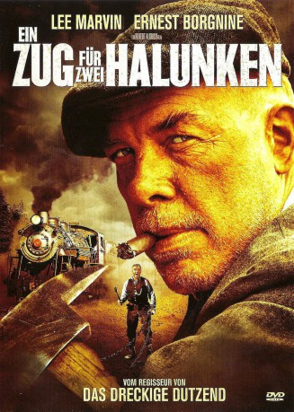
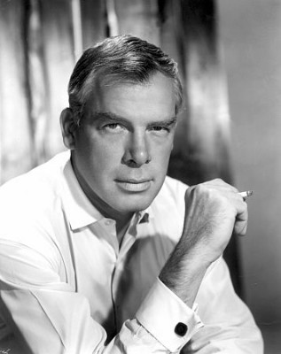
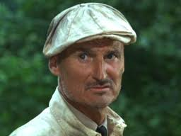
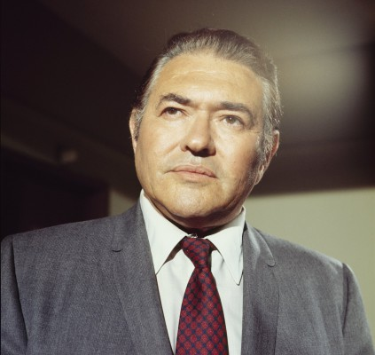
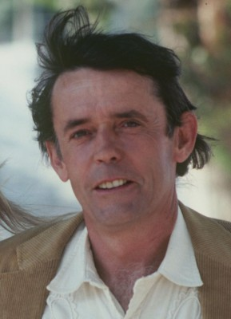
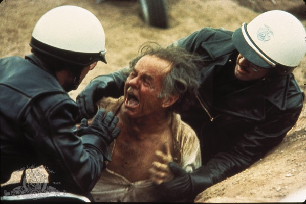
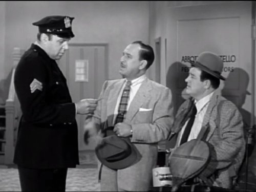
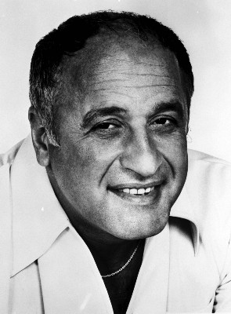
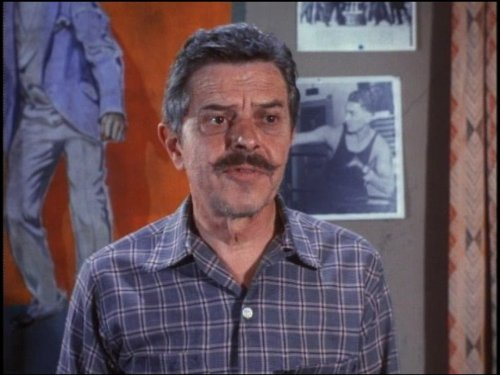
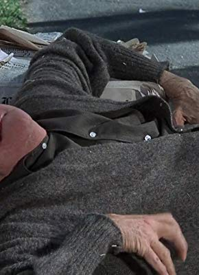

#4797 Ein Zug für zwei Halunken
Alternativ: Emperor of the North (Englischer Titel)
 
 IMDB-Wertung: 7.4 / 10
IMDB-Wertung: 7.4 / 10  Metascore: 0
Metascore: 0 
Im Amerika der 30er Jahre liefern sich ein Tramp und ein Zugführer den Zweikampf ihres Lebens. Amerika in den Jahren der Depression. Züge sind für Arbeitslose und Landstreicher ein beliebtes, weil kostenloses Transportmittel vorausgesetzt, man läßt sich nicht erwischen. Nur die berüchtigte Linie 19 wird gemieden, dort prügelt der sadistische Lokführer Shack aufgesprungene “Hobos” mit Eisenstangen und Ketten vom Zug. Doch der ungekrönte König der Tramps, “As-Nr. 1”, läßt sich diesen Terror nicht gefallen und fordert den brutalen Shack heraus.
Jahr: 1973
Dauer: 120 Minuten
FSK: 16
Land: USA Studio: 20th Century FoxTonspuren: DD2.0 - ,
Untertitel: Deutsch,
Auflösung: 1080p (1920x1040) Größe: 6717 MB
Genre: Action, Thriller, Drama, Abenteuer
Regisseur: Robert Aldrich
Drehbuch: Bill Kennedy
Soundtrack:
Darsteller:
-  Lee Marvin als A No. 1
 Ernest Borgnine als Shack
Ernest Borgnine als Shack- Keith Carradine als Cigaret
-  Charles Tyner als Cracker
 Malcolm Atterbury als Hogger
Malcolm Atterbury als Hogger-  Simon Oakland als Policeman
-  Matt Clark als Yardlet
-  Elisha Cook Jr. als Gray Cat
-  Robert Foulk als Conductor
 Sid Haig als Grease Tail
Sid Haig als Grease Tail-  Vic Tayback als Yardman
-  Dave Willock als Groundhog
- Jack Collins als Dispatcher , uncredited
 Lance Henriksen als Railroad worker , uncredited
Lance Henriksen als Railroad worker , uncredited- Harry Caesar als Coaly
 Hal Baylor als Yardman's Helper
Hal Baylor als Yardman's Helper- Joe Di Reda als Dinger
-  Liam Dunn als Smile
- Diane Dye als Girl in Water
- Jim Goodwin als Fakir
- Raymond Guth als Preacher
- Karl Lukas als Pokey Stiff
- Edward McNally als Yard Clerk
- John Steadman als Stew Bum
- Don Blackman als Old Shine , uncredited
- Richard Daughty als The Cub , uncredited
- Bennie E. Dobbins als Mechanic , uncredited
- Joe Haworth als Ash Eater , uncredited
- Harry Hickox als Elder , uncredited
- Bern Hoffman als Halfy , uncredited
- James Kingsley als Machinist , uncredited
- George McFadden als Prairie Special engineer , uncredited
- Ralph Montgomery als Alkee Stiff , uncredited
- Hal John Norman als Hobo , uncredited
- Danny 'Big Black' Rey als Hobo , uncredited
- Wayne Sutherlin als Gink , uncredited
Datei: X:\1973\Zug für zwei Halunken, Ein (1973, FSK16, 1920x1040).mkv seit 18.11.2016
Festplatte: HD 1971-1979
 Es gibt insgesamt 30 Filme in der Gruppe '1973'
Es gibt insgesamt 30 Filme in der Gruppe '1973'